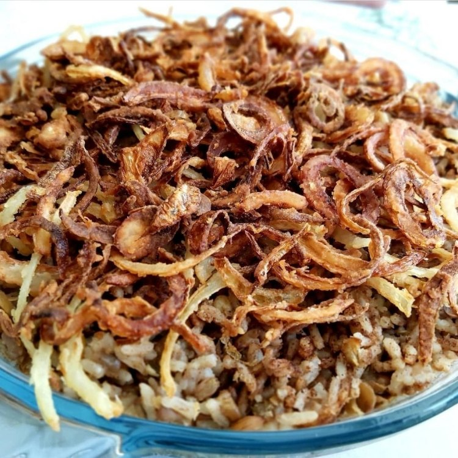

Culinária da Síria
A Ciência e a Arte do Cozimento na Idade do Bronze
Estudos recentes revelam que a sofisticação gastronômica da região não vem de hoje. A análise de recipientes arqueológicos da cidade de Hama, na atual Síria — datados de 4.500 anos atrás —, mostra que os cozinheiros da Idade do Bronze já faziam escolhas técnicas deliberadas sobre quais utensílios usar para cada tipo de receita.
Seleção de Utensílios e Propriedades Térmicas
- Utensílios Locais: Feitos de argila e calcita, adequados para o uso cotidiano.
- Utensílios das Estepes: Feitos com argila e basalto, o que alterava as propriedades térmicas do recipiente e permitia suportar temperaturas muito mais altas.
- Técnica: Os cozinheiros associavam panelas específicas a diferentes métodos de cozimento e ingredientes, demonstrando um conhecimento avançado de culinária e termodinâmica artesanal.
Ingredientes e Origem dos Alimentos
- Vegetais e grãos: Cereais, lentilhas, azeitonas e uvas.
- Proteínas: Carnes de carneiro, cabra, porco, gado e gazela.
- Logística: Os ingredientes vinham tanto das proximidades de Hama quanto de regiões mais distantes, como as estepes a leste da cidade.
